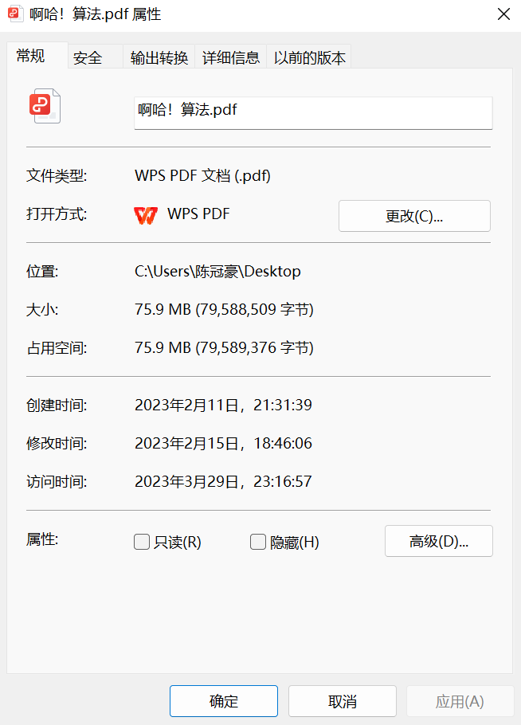
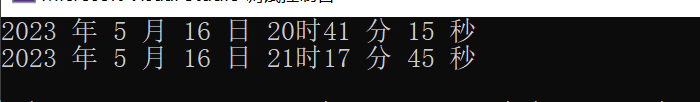

Windows-API-程序设计（2）
系统学习Windows API 2
Windows数据结构
这里的数据结构指的是Windows文件体系的结构。
这里的结构是用老式的C定义与实现的，为了与之对应，我们采取打开一个文件的属性查看作为可视化的理解。
typedef struct _WIN32_FILE_ATTRIBUTE_DATA {
DWORD dwFileAttributes;// 文件属性
FILETIME ftCreationTime;// 创建时间
FILETIME ftLastAccessTime;// 最后访问时间
FILETIME ftLastWriteTime;// 最后修改
DWORD nFileSizeHigh;// 文件长度
DWORD nFileSizeLow; // 文件长度
} WIN32_FILE_ATTRIBUTE_DATA, *LPWIN32_FILE_ATTRIBUTE_DATA;
下面我们来看怎样使用这样的结构.
一些函数的讲解
我们获取文件属性使用Windows的GetFileAttributesEx函数宏,他需要参数文件地址,获取方式和WIN32_FILE_ATTRIBUTE_DATA结构体.这个函数跟我们熟悉的C变成一样,以参数的参数进入返回初始化后的参数.
GetFileAttributesEx()
GetFileAttributesExW 函数 (fileapi.h)
反馈
检索指定文件或目录的属性。
若要将此操作作为事务处理操作执行，请使用 GetFileAttributesTransacted 函数。
语法
BOOL GetFileAttributesExW(
[in] LPCWSTR lpFileName,
[in] GET_FILEEX_INFO_LEVELS fInfoLevelId,
[out] LPVOID lpFileInformation
);参数
[in] lpFileName 文件或目录的名称。
在此函数的 ANSI 版本中，名称限制为 MAX_PATH 个字符。 若要将此限制扩展到 32，767 宽字符，请调用函数的 Unicode 版本 (GetFileAttributesExW) ，并将“\\？\”追加到路径。 有关详细信息，请参阅 命名文件。
提示
从 Windows 10 版本 1607 开始，对于此函数的 unicode 版本， (GetFileAttributesExW) ，可以选择加入以删除MAX_PATH字符限制，而无需追加“\\？\”。 有关详细信息，请参阅 命名文件、路径和命名空间 的“最大路径限制”部分。
[in] fInfoLevelId 要检索的属性信息的类。
此参数可以是 GET_FILEEX_INFO_LEVELS 枚举中的以下值。
| Value | 含义 |
|---|---|
| GetFileExInfoStandard | lpFileInformation 参数是一个WIN32_FILE_ATTRIBUTE_DATA结构。 |
[out] lpFileInformation 指向接收属性信息的缓冲区的指针。
存储在此缓冲区中的属性信息类型由 fInfoLevelId 的值决定。
返回值
如果函数成功，则返回值为非零值。
如果函数失败，则返回值为 0 (0) 。 要获得更多的错误信息，请调用 GetLastError。
获取时间
现在我们拿到了初始化结束的结构体,我们想看看时间.要知道,显示时间是可以多样化的,意味着微软希望我们自己书写函数来展示之.
为了提高效率,时间被压缩在几个字节,需要我们自己来转化.这个也是一个结构体FileTime.
void showFileTime(PFILETIME aTime)
{
}#include<Windows.h>
#include<iostream>
using namespace std;
void showFileTime(PFILETIME aTime)
{
FILETIME filetimeLocal;
SYSTEMTIME sysFileTime;
FileTimeToLocalFileTime(aTime, &filetimeLocal);// 转换成系统时区时间
FileTimeToSystemTime(&filetimeLocal, &sysFileTime);
cout << sysFileTime.wYear << " 年 " << sysFileTime.wMonth << " 月 " << \
sysFileTime.wDay << " 日 " << sysFileTime.wHour<<"时" << sysFileTime.wMinute << " 分 " << sysFileTime.wSecond << " 秒" << endl;
return;
}
void showInfo(LPWIN32_FILE_ATTRIBUTE_DATA pWfad)
{
if (pWfad == NULL) {
cout << "Failed to get the file";
return;
}
showFileTime(&pWfad->ftCreationTime);
showFileTime(&pWfad->ftLastAccessTime);
}
int main(){
WIN32_FILE_ATTRIBUTE_DATA wfad;
if (!GetFileAttributesEx(L"1.cpp", GetFileExInfoStandard, &wfad))
{
cout << "Failed to get the file";
return 1;
}
showInfo(&wfad);
}
获取系统目录
为了获取系统目录信息，需要使用函数来完成这项工作！这个函数是GetSystemDirectory()
使用它很简单：
#include<Windows.h>
#include<stdio.h>
#include<locale.h>
int main() {
setlocale(LC_ALL,"");
TCHAR szSystemDir[MAX_PATH];
GetSystemDirectory(szSystemDir, MAX_PATH);
printf("%ls", szSystemDir);
}GetSystemDirectoryW 函数 (sysinfoapi.h)
检索系统目录的路径。 系统目录包含系统文件，如动态链接库和驱动程序。
此函数主要用于兼容性。 应用程序应将代码存储在 Program Files 文件夹中，并将持久数据存储在用户配置文件的 Application Data 文件夹中。 有关详细信息，请参阅 ShGetFolderPath。
语法
UINT GetSystemDirectoryW(
[out] LPWSTR lpBuffer,
[in] UINT uSize
);参数
[out] lpBuffer 指向要接收路径的缓冲区的指针。 除非系统目录是根目录，否则此路径不会以反斜杠结尾。 例如，如果系统目录在驱动器 C 上命名为 Windows\System32，则此函数检索的系统目录的路径为 C：\Windows\System32。
[in] uSize 缓冲区的最大大小（以 TCHAR 为单位）。
返回值
如果函数成功，则返回值为复制到缓冲区的字符串的长度（以 TCHAR 为单位），不包括终止 null 字符。 如果长度大于缓冲区的大小，则返回值是保存路径所需的缓冲区大小，包括终止 null 字符。
如果函数失败，则返回值为零。 要获得更多的错误信息，请调用 GetLastError。

下面写之进入一个文件！
#include<Windows.h>
#include<stdio.h>
#include<locale.h>
int main() {
setlocale(LC_ALL,"");
TCHAR szSystemDir[MAX_PATH];
GetSystemDirectory(szSystemDir, MAX_PATH);
printf("%ls", szSystemDir);
DWORD dwWritten;
HANDLE hFile;
hFile = CreateFile(L"SystemRoot.txt", GENERIC_WRITE, 0, NULL, CREATE_ALWAYS, FILE_ATTRIBUTE_NORMAL, NULL);
if (hFile != INVALID_HANDLE_VALUE) {
if (!WriteFile(hFile, szSystemDir, 2*lstrlen(szSystemDir), &dwWritten, NULL)) {
return GetLastError();
}
}
CloseHandle(hFile);
printf("OK");
}创建窗口和消息处理
两大方法：使用向导来创建窗口，或者是手写代码自己来写
我们来创建一个Windows应用程序。
// WindowsProject1.cpp : 定义应用程序的入口点。
//
#include "framework.h"
#include "WindowsProject1.h"
#define MAX_LOADSTRING 100
// 全局变量:
HINSTANCE hInst; // 当前实例
WCHAR szTitle[MAX_LOADSTRING]; // 标题栏文本
WCHAR szWindowClass[MAX_LOADSTRING]; // 主窗口类名
// 此代码模块中包含的函数的前向声明:
ATOM MyRegisterClass(HINSTANCE hInstance);
BOOL InitInstance(HINSTANCE, int);
LRESULT CALLBACK WndProc(HWND, UINT, WPARAM, LPARAM);
INT_PTR CALLBACK About(HWND, UINT, WPARAM, LPARAM);
int APIENTRY wWinMain(_In_ HINSTANCE hInstance,
_In_opt_ HINSTANCE hPrevInstance,
_In_ LPWSTR lpCmdLine,
_In_ int nCmdShow)
{
UNREFERENCED_PARAMETER(hPrevInstance);
UNREFERENCED_PARAMETER(lpCmdLine);
// TODO: 在此处放置代码。
// 初始化全局字符串
LoadStringW(hInstance, IDS_APP_TITLE, szTitle, MAX_LOADSTRING);
LoadStringW(hInstance, IDC_WINDOWSPROJECT1, szWindowClass, MAX_LOADSTRING);
MyRegisterClass(hInstance);
// 执行应用程序初始化:
if (!InitInstance (hInstance, nCmdShow))
{
return FALSE;
}
HACCEL hAccelTable = LoadAccelerators(hInstance, MAKEINTRESOURCE(IDC_WINDOWSPROJECT1));
MSG msg;
// 主消息循环:
while (GetMessage(&msg, nullptr, 0, 0))
{
if (!TranslateAccelerator(msg.hwnd, hAccelTable, &msg))
{
TranslateMessage(&msg);
DispatchMessage(&msg);
}
}
return (int) msg.wParam;
}
//
// 函数: MyRegisterClass()
//
// 目标: 注册窗口类。
//
ATOM MyRegisterClass(HINSTANCE hInstance)
{
WNDCLASSEXW wcex;
wcex.cbSize = sizeof(WNDCLASSEX);
wcex.style = CS_HREDRAW | CS_VREDRAW;
wcex.lpfnWndProc = WndProc;
wcex.cbClsExtra = 0;
wcex.cbWndExtra = 0;
wcex.hInstance = hInstance;
wcex.hIcon = LoadIcon(hInstance, MAKEINTRESOURCE(IDI_WINDOWSPROJECT1));
wcex.hCursor = LoadCursor(nullptr, IDC_ARROW);
wcex.hbrBackground = (HBRUSH)(COLOR_WINDOW+1);
wcex.lpszMenuName = MAKEINTRESOURCEW(IDC_WINDOWSPROJECT1);
wcex.lpszClassName = szWindowClass;
wcex.hIconSm = LoadIcon(wcex.hInstance, MAKEINTRESOURCE(IDI_SMALL));
return RegisterClassExW(&wcex);
}
//
// 函数: InitInstance(HINSTANCE, int)
//
// 目标: 保存实例句柄并创建主窗口
//
// 注释:
//
// 在此函数中，我们在全局变量中保存实例句柄并
// 创建和显示主程序窗口。
//
BOOL InitInstance(HINSTANCE hInstance, int nCmdShow)
{
hInst = hInstance; // 将实例句柄存储在全局变量中
HWND hWnd = CreateWindowW(szWindowClass, szTitle, WS_OVERLAPPEDWINDOW,
CW_USEDEFAULT, 0, CW_USEDEFAULT, 0, nullptr, nullptr, hInstance, nullptr);
if (!hWnd)
{
return FALSE;
}
ShowWindow(hWnd, nCmdShow);
UpdateWindow(hWnd);
return TRUE;
}
//
// 函数: WndProc(HWND, UINT, WPARAM, LPARAM)
//
// 目标: 处理主窗口的消息。
//
// WM_COMMAND - 处理应用程序菜单
// WM_PAINT - 绘制主窗口
// WM_DESTROY - 发送退出消息并返回
//
//
LRESULT CALLBACK WndProc(HWND hWnd, UINT message, WPARAM wParam, LPARAM lParam)
{
switch (message)
{
case WM_COMMAND:
{
int wmId = LOWORD(wParam);
// 分析菜单选择:
switch (wmId)
{
case IDM_ABOUT:
DialogBox(hInst, MAKEINTRESOURCE(IDD_ABOUTBOX), hWnd, About);
break;
case IDM_EXIT:
DestroyWindow(hWnd);
break;
default:
return DefWindowProc(hWnd, message, wParam, lParam);
}
}
break;
case WM_PAINT:
{
PAINTSTRUCT ps;
HDC hdc = BeginPaint(hWnd, &ps);
// TODO: 在此处添加使用 hdc 的任何绘图代码...
EndPaint(hWnd, &ps);
}
break;
case WM_DESTROY:
PostQuitMessage(0);
break;
default:
return DefWindowProc(hWnd, message, wParam, lParam);
}
return 0;
}
// “关于”框的消息处理程序。
INT_PTR CALLBACK About(HWND hDlg, UINT message, WPARAM wParam, LPARAM lParam)
{
UNREFERENCED_PARAMETER(lParam);
switch (message)
{
case WM_INITDIALOG:
return (INT_PTR)TRUE;
case WM_COMMAND:
if (LOWORD(wParam) == IDOK || LOWORD(wParam) == IDCANCEL)
{
EndDialog(hDlg, LOWORD(wParam));
return (INT_PTR)TRUE;
}
break;
}
return (INT_PTR)FALSE;
} 这就是一个demo,下面我们使用手写的办法来写一个超级简化版本

基本原理
先看窗口：
typedef struct tagWNDCLASSEXW {
UINT cbSize;
/* Win 3.x */
UINT style;
WNDPROC lpfnWndProc;
int cbClsExtra;
int cbWndExtra;
HINSTANCE hInstance;
HICON hIcon;
HCURSOR hCursor;
HBRUSH hbrBackground;
LPCWSTR lpszMenuName;
LPCWSTR lpszClassName;
/* Win 4.0 */
HICON hIconSm;
} WNDCLASSEXW, *PWNDCLASSEXW, NEAR *NPWNDCLASSEXW, FAR *LPWNDCLASSEXW;#include<Windows.h>
#include<tchar.h>
HWND hwnd;
HINSTANCE hInst;
LRESULT CALLBACK MainWndProc(HWND hwnd, UINT uMsg, WPARAM wParam, LPARAM lParam);
int WINAPI WinMain(HINSTANCE hInstance, HINSTANCE hPrevInstance, LPSTR lpCmdLine, int nCmdShow) {
//窗口
WNDCLASSEX wcx;
//消息
MSG msg;
BOOL fGotMsg;
wcx.cbSize = sizeof(wcx);
wcx.style = CS_HREDRAW | CS_VREDRAW; // 发生大小改变时再次绘制窗口
wcx.lpszClassName = L"MainWndProc";
wcx.lpfnWndProc = MainWndProc;
wcx.cbClsExtra = 0;// 不使用额外内存
wcx.cbWndExtra = 0;
wcx.hInstance = hInstance;
wcx.hIcon = LoadIcon(NULL,IDI_APPLICATION);
wcx.hCursor = LoadCursor(NULL, IDC_ARROW);
wcx.hbrBackground = (HBRUSH)GetStockObject(WHITE_BRUSH);
wcx.lpszMenuName = NULL;
wcx.hIconSm = (HICON)LoadImage(hInstance,
MAKEINTRESOURCE(5),
IMAGE_ICON,
GetSystemMetrics(SM_CXSMICON),
GetSystemMetrics(SM_CXSMICON),
LR_DEFAULTCOLOR
);
// 注册！在创建
if (!RegisterClassEx(&wcx)) {
return -1;
}
TCHAR h1[] = L"hello";
TCHAR h2[] = L"hello";
hwnd = CreateWindowEx(0, h1, h2, WS_OVERLAPPEDWINDOW, CW_USEDEFAULT, \
CW_USEDEFAULT, 300, 180, NULL, NULL, hInstance, NULL);
if (!hwnd) {
return GetLastError();
}
ShowWindow(hwnd, nCmdShow);
UpdateWindow(hwnd);//提升优先级到最先
// 消息队列取消息
while ((fGotMsg = GetMessage(&msg, (HWND)NULL, 0, 0))!=0) {
TranslateMessage(&msg); // 一些消息需要翻译
DispatchMessage(&msg); //转发消息给窗口过程
}
return msg.wParam;
}
//
LRESULT CALLBACK MainWndProc(HWND hwnd, UINT uMsg, WPARAM wParam, LPARAM lParam)
{
switch (uMsg) {
case WM_DESTROY:
PostQuitMessage(0); // 退出线程
return 0;
case WM_LBUTTONDOWN:
MessageBox(hwnd, L"hello", L"hello", MB_OK);
return 0;
default:
return DefWindowProc(hwnd, uMsg, wParam, lParam);
}
}